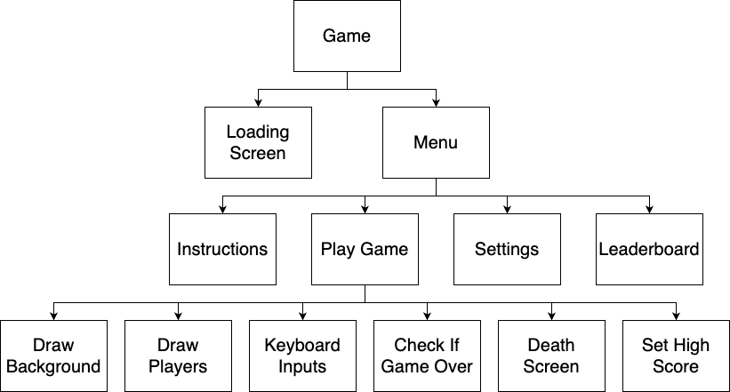

GCSE Link: 2.12 - Structured Programming
 A programming paradigm is an approach to programming.
A programming paradigm is an approach to programming.
There are many different paradigms which we will explore in this section.
 Procedural programming is a programming paradigm where programs contain commands which run step by step.
Procedural programming is a programming paradigm where programs contain commands which run step by step.
All the programming we have done so far has been procedural. The three basic constructs of procedural programming are sequence, selection and iteration, as we learnt at GCSE. We often need to structure procedural programs (see GCSE Link) to make them more readable.
 Hierarchy charts can show how the different subroutines in a program work together.
Hierarchy charts can show how the different subroutines in a program work together.
Diagram 1 shows an example hierarchy chart for a simple game.
 Diagram 1
Diagram 1

Hierarchy charts can provide a high-level overview of the program and allow teams of people to work on different parts of the program separately.
 How can structured programming make testing the program easier?
How can structured programming make testing the program easier?
You can test each subroutine separately to pinpoint any errors.